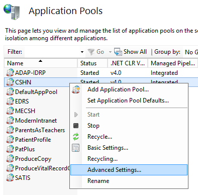
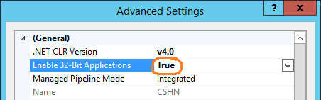

Could not load file or assembly ... An attempt was made to load a program with an incorrect format (System.BadImageFormatException)
I have two projects, ProjectA and ProjectB. ProjectB is a console
application, which depends on ProjectA. Yesterday, everything was working
fine, but suddenly today when I run ProjectB I get this:
BadImageFormatException was unhandled :
Could not load file or assembly 'ProjectA, Version=1.0.0.0, Culture=neutral, PublicKeyToken=null' or one of its dependencies. An attempt was made to load a program with an incorrect format.
Both are just regular projects, with no dependencies on any other non-.Net
projects. Both are fully .Net - there is no native code, and no P/Invoke. I
have other projects which depend on ProjectA and still work just fine.
Things I have tried:
- Make sure both projects are set to "Any CPU," with the build checkbox checked. They are.
- Make sure both projects are for the same Target Framework (.Net 4.0 Client Profile).
- Under ProjectB --> References --> ProjectA --> Properties, make sure "Copy Local" is set to "True" _ (I verified that ProjectA.dll is being copied correctly)
- Clean/Rebuild the solution. I even tried manually deleting the /bin and /obj folders in both projects.
- Restart Visual Studio. Restart my computer.
- Check out an entirely new copy of the repository.
But I still get the same error. I have no idea what I did to cause this, nor how to fix it. Any ideas?
Answer
I am pretty sure you're having a 32-bit / 64-bit conflict. It sounds like your main project might be set to 32-bit while the class its referencing is set to 64-bit. Try looking at this SO question and this one too. Between the two of them, you should be able to figure out your problem.
The APP is set to run on 64-bit but the DLL is running on 32 bit to mitigate this navigate to IIS >> Application pool >> Advanced settings >> Enable 32 bit applications then set to true.
Suggest
Might be you are facing the problem with your website after deploying on server.
Then you need to adjust your application pool to Enable 32-Bit Applications.
Steps
- Open IIS Manager
- Click on Application Pools
- Select whatever application pool you are using
-
From right pane, click Advanced Settings...
-
Set Enable 32-Bit Applications to True
